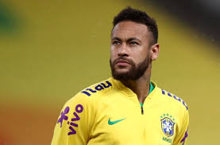
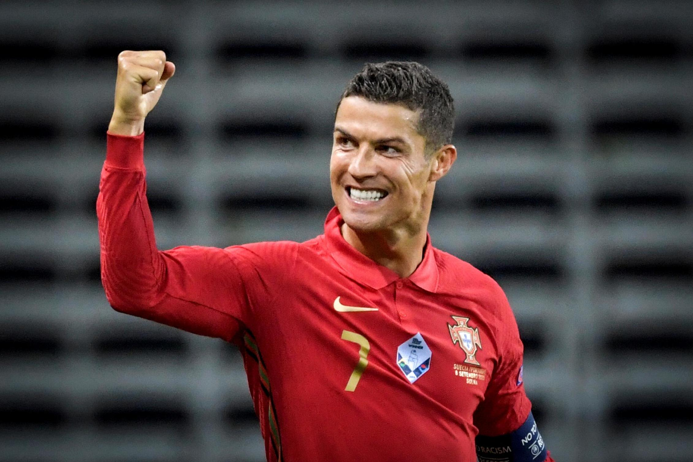

Lionel Messi
Lionel Andrés Messi is an Argentine professional footballer who plays as a forward and captains both Spanish club Barcelona and the Argentina national team.

Neymar Jr.
Neymar da Silva Santos Júnior, known as Neymar, is a Brazilian professional footballer who plays as a forward for Ligue 1 club Paris Saint-Germain and the Brazil national team.

Cristiano Ronaldo
Cristiano Ronaldo dos Santos Aveiro GOIH ComM is a Portuguese professional footballer who plays as a forward for Serie A club Juventus and captains the Portugal national team.